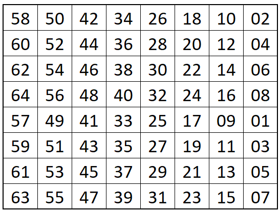
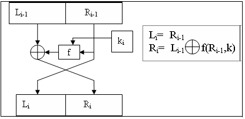
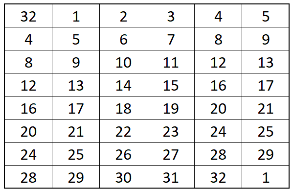
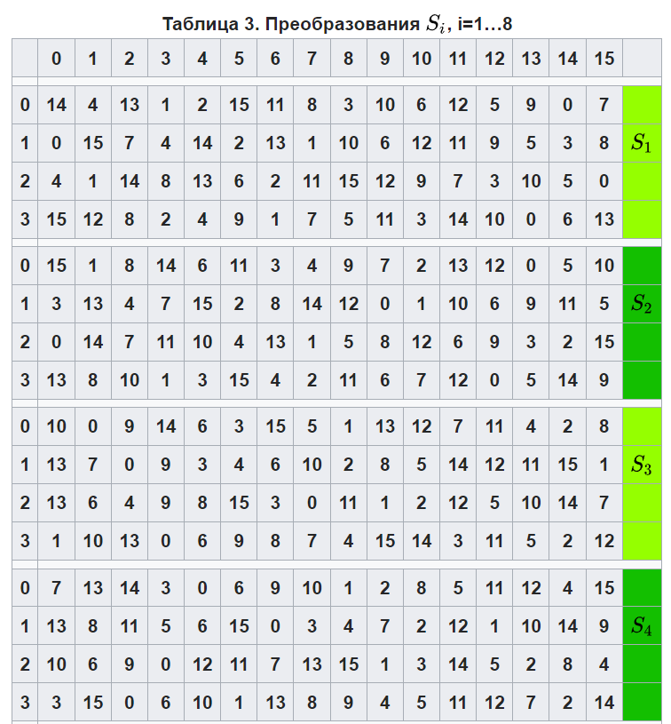
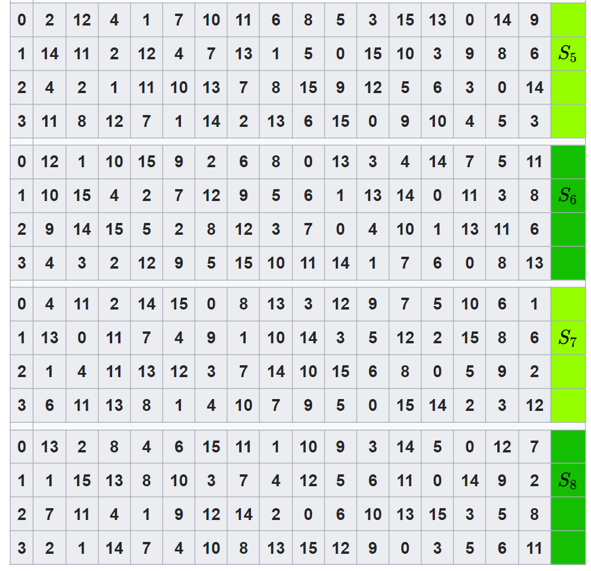
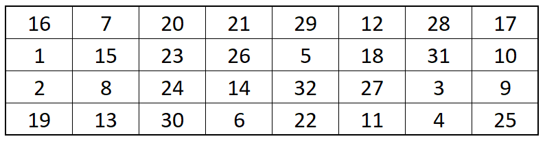
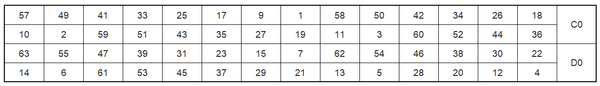
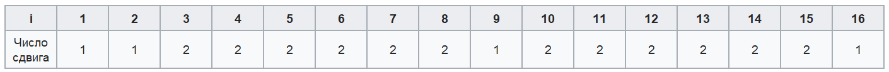
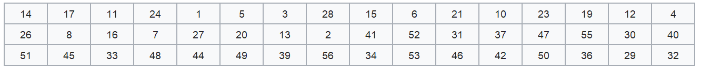
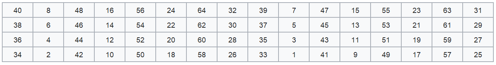

Алгоритм шифрования:
Алгоритм шифрования DES состоит из нескольких этапов, включая начальную и конечную перестановки, а также серию раундов, в каждом из которых применяются подстановки и перестановки.
1. Начальная перестановка (Initial Permutation - IP):
Входные данные блока размером 64 бита подвергаются начальной перестановке, где биты блока переставляются в определенном порядке.Цель начальной перестановки - перемешать биты входного блока таким образом, чтобы каждый бит в исходном блоке влиял на максимальное количество бит в выходном блоке, что увеличивает сложность криптографических атак.
Начальная перестановка представляет собой фиксированную таблицу перестановки, в которой каждый бит входного блока перемещается на определенную позицию в выходном блоке. Эта таблица определена стандартом DES и остается неизменной во всех реализациях алгоритма.

2. Раунды шифрования:
DES состоит из 16 раундов, каждый раунд DES применяет шифр Файстеля:

Раунд принимает Li-1 Ri-1 от предыдущего раунда (или начального блока перестановки) и создает для следующего раунда Li И Ri, которые поступают на следующий раунд (или конечный блок перестановки). Создание происходит следующим образом:
Li = Ri-1
Ri = Li-1 ⊕ f (Ri-1, k i)
Рассмотрим подробнее функцию f. Ее аргументами являются 32-битный вектор Ri-1 и 48-битный ключ k i, который является результатом преобразования 56-битового исходного ключа шифра. Функция f состоит из следующих этапов:
1. Этап расширения;
2. Сложение по модулю 2 с ключом k i;
3. Преобразование S, состоящее из 8 преобразований S-блоков: S1,S2, …, S8,;
4. Перестановка P.
Этап расширения предназначен для увеличения размера блока данных перед его обработкой в S-блоках.
Этап расширения происходит следующим образом:
• На этап расширения поступает правая половина блока данных Ri-1 размером 32 бита.
• Ri-1 расширяется до 48 бит, путем дублирования и перестановки некоторых битов.
В стандарте DES определена фиксированная таблица расширения, которая задает соответствие между битами входного блока и их позициями в расширенном блоке. Эта таблица имеет следующий вид:

Полученный после перестановки 48-битный блок складывается по модулю 2 с ключом k i и затем представляется в виде восьми последовательных 6-битных блоков B1, B2, …, B8. Далее каждый из блоков Bj трансформируется в 4-битный блок B’j с помощью преобразований Sj


Предположим, что, B5 = 1010112. Первый и последний разряды являются двоичной записью числа а, 0 <= a <= 3, средние 4 разряда представляют число b, 0 <= b <= 15. Строки таблицы S5 нумеруются от 0 до 3, столбцы таблицы S5 нумеруются от 0 до 15. Пара чисел (а, b) определяет число, находящееся в пересечении строки а и столбца b. Двоичное представление этого числа дает B’5. В рассматриваемом случае a = 112= 3, b = 01012 = 5, число, определяемое парой (3,5), равно 14. Его двоичное представление B’5 = 11102.
Значение функции f получается перестановкой Р, применяемой к 32-битному блоку B’1, B’2, …, B’8. Эта перестановка задана следующей таблицей:

Согласно этой таблице, первые четыре бита результирующего вектора после действия функции f — это биты 16, 7, 20, 21 вектора B’1, B’2, …, B’8.
Для каждого раунда генерируется уникальный ключ из основного ключа шифрования, который получается путем перестановок и сжатий. Ключи ki получаются из начального ключа k (56 бит) следующим образом: добавляются биты в позиции 8, 16, 24, 32, 40, 48, 56, 64 ключа k таким образом, чтобы каждый байт содержал нечетное число единиц. Это используется для обнаружения ошибок при обмене и хранении ключей. Затем делают перестановку для расширенного ключа (кроме добавляемых битов 8, 16, 24, 32, 40, 48, 56, 64). Такая перестановка определена в таблице:

Эта перестановка определяется двумя блоками C0 и D0 по 28 бит каждый. Первые 3 бита C0 есть биты 57, 49, 41 расширенного ключа. А первые три бита D0 есть биты 63, 55, 47 расширенного ключа Ci, Di, i = 1, 2, … получаются из Ci-1, Di-1, одним или двумя левыми циклическими сдвигами согласно таблице:

Ключ ki i=1,…, 16 состоит из 48 бит, выбранных из битов вектора Ci, Di (56 бит) согласно таблице:

3. Конечная перестановка
Конечная перестановка IP⁻¹ действует на T⁻¹16 = R16 + L16 и является обратной к первоначальной перестановке. Конечная перестановка определяется таблицей:
